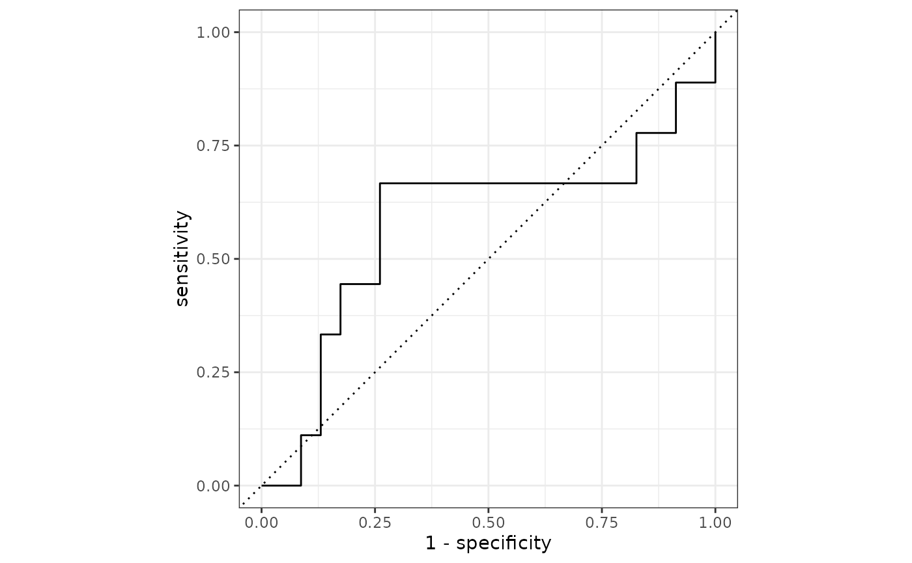

Here is an application of the logistic_reg glm with
oregonfrogs.
frogs <- oregonfrogs %>%
janitor::clean_names() %>%
mutate(survey_date=as.Date(survey_date,"%m/%d/%Y"),
sex=as.factor(sex))%>%
arrange(doy)
set.seed(123)
split <- initial_split(frogs, strata = sex, prop = 0.9)
training <- training(split)
test <- testing(split)
cv_folds <- vfold_cv(training,strata = sex,v = 10,repeats = 5)
library(themis)
recipe <- recipe(sex ~ . ,training) %>%
step_downsample(sex) %>%
step_date(survey_date,keep_original_cols = FALSE) %>%
step_corr(all_numeric(),threshold = 0.8) %>%
step_dummy(all_nominal(), -all_outcomes()) %>%
step_zv(all_numeric()) %>%
step_normalize(all_numeric())
log_wkf <- workflow() %>%
add_recipe(recipe) %>%
add_model(log_mod) %>%
fit(training)
final_mod <- last_fit(log_wkf, split)final_mod %>%
augment() %>%
conf_mat(truth = sex, estimate = .pred_class)
Truth
Prediction 0 1
0 6 7
1 3 16
two_class_curve <- final_mod %>%
augment() %>%
roc_curve(truth = sex, estimate = .pred_0)
autoplot(two_class_curve)